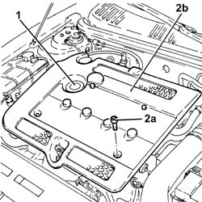
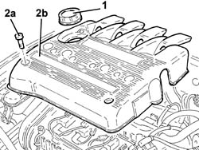

Procedures › 10 ENGINE UNIT › 1016 CYLINDER HEAD/S › 1016A CAM COVERS › 1016A40 IGNITION COIL COVER ON CYLINDER HEAD- R+R 1016A40 IGNITION COIL COVER ON CYLINDER HEAD- R+R
Path Procedures > 10 ENGINE UNIT > 1016 CYLINDER HEAD/S > 1016A CAM COVERS > 1016A40 IGNITION COIL COVER ON CYLINDER HEAD- R+R
Kind repair procedure (removal / refitting; the operation number is the code)
Applies to engines: 1.8 T.SPARK, 2.0 JTS; all production periods
Interactive page https://sloeber94.github.io/elrnDB-aGt/en/#/125000895
Applies to: engines: 2.0 JTS; all production periods
1. Remove the engine oil filler plug.
2. Undo the bolts (2a) and remove the ignition coils cover (2b).
Refit the engine oil filler plug.

Applies to: engines: 2.0 JTS; all production periods
Remove the engine oil filler plug.
Fit the ignition coils cover on the cylinder head and secure with the bolts.
Refit the engine oil filler plug.
Applies to: engines: 1.8 T.SPARK; all production periods
1. Remove the engine oil filler plug.
2. Undo the bolts (2a) and remove the ignition coils cover (2b).

Applies to: engines: 1.8 T.SPARK; all production periods
Fit the ignition coils cover on the cylinder head and fix it using the bolts.
Fit the engine oil filler plug.
Topics that link to this page (78) 0510C10 FUEL SYSTEM - CHECK DELIVERY PRESSURE repair procedure (removal / refitting; the operation number is the code) · engines: 1.8 T.SPARK, 2.0 JTS; all production periods 1004B10 POWER UNIT WITH MANUAL GEARBOX - R + R repair procedure (removal / refitting; the operation number is the code) · all engines; all production periods 1004B24 POWER UNIT WITH MANUAL GEARBOX WITH HYDRAULIC SELECTION - R R repair procedure (removal / refitting; the operation number is the code) · engines: 2.0 JTS; all production periods; only with equipment: Smart gearbox 1008A44 REAR RIGID MOUNT - R R repair procedure (removal / refitting; the operation number is the code) · all engines; all production periods 1008C10 POWER UNIT UPPER REACTION LINK R R repair procedure (removal / refitting; the operation number is the code) · all engines; all production periods 1008C16 BODY LINK BRACKET - R R repair procedure (removal / refitting; the operation number is the code) · all engines; all production periods 1008C18 LINK MOUNT ON ENGINE - R R repair procedure (removal / refitting; the operation number is the code) · engines: 1.8 T.SPARK; all production periods 1016A20 SINGLE CAM COVER - R + R AND REPLACE GASKET repair procedure (removal / refitting; the operation number is the code) · engines: 1.8 T.SPARK, 2.0 JTS; all production periods 1016C10 SINGLE CYLINDER HEAD, REMOVED - OVERHAUL repair procedure (removal / refitting; the operation number is the code) · engines: 1.8 T.SPARK, 2.0 JTS, 1.9 JTD 16V; all production periods 1020A20 CRANK CASE OIL SUMP - R + R CLEAN SEALS FOR SEALANT APPLICATION repair procedure (removal / refitting; the operation number is the code) · all engines; all production periods 1020D15 FRONT CRANKSHAFT OIL SEAL COVER-R+R AND REPLACE SEALS FOR ENGINES WITH OIL PUMP ON CRANKSHAFT AND HEAT EXCHANGER repair procedure (removal / refitting; the operation number is the code) · engines: 1.8 T.SPARK, 2.0 JTS; all production periods 1020D18 FRONT CRANK SHAFT COVER OIL SEAL - REPLACE repair procedure (removal / refitting; the operation number is the code) · all engines; all production periods 1020D36 FLYWHEEL END OIL SEAL - REPLACE FOR MANUAL GEARBOX WITH HYDRAULIC SELECTION VERSIONS repair procedure (removal / refitting; the operation number is the code) · engines: 2.0 JTS; all production periods; only with equipment: Smart gearbox 1020E10 OIL SEAL COVER (ONE) - L OR R - ON COUNTER-ROTATING SHAFTS - R + R AND REPLACE SEALS repair procedure (removal / refitting; the operation number is the code) · engines: 2.0 JTS; all production periods 1020E20 FRONT OIL SEAL OF ONE COUNTER-ROTATING SHAFT, L OR R - R + R repair procedure (removal / refitting; the operation number is the code) · engines: 2.0 JTS; all production periods 1024B11 ENGINE FLYWHEEL - R R FOR MANUAL GEARBOX WITH HYDRAULIC SELECTION VERSIONS repair procedure (removal / refitting; the operation number is the code) · engines: 2.0 JTS; all production periods; only with equipment: Smart gearbox 1028H10 PISTON WITH CONNECTING ROD - R R repair procedure (removal / refitting; the operation number is the code) · engines: 1.8 T.SPARK, 2.0 JTS, 1.9 JTD 16V; all production periods 1032B10 TOOTHED TIMING BELT - R + R FOR TIMING ADJUSTMENT OR REPLACEMENT repair procedure (removal / refitting; the operation number is the code) · all engines; all production periods 1032B46 TOOTHED DRIVE PULLEY - R + R repair procedure (removal / refitting; the operation number is the code) · all engines; all production periods 1032B52 TOOTHED DRIVEN PULLEY (ONE) - R + R repair procedure (removal / refitting; the operation number is the code) · engines: 1.8 T.SPARK, 2.0 JTS, 1.9 JTD 16V; all production periods 1032C18 MOBILE TIMING SYSTEM TENSIONER - R + R FOR 24 VALVE ENGINES repair procedure (removal / refitting; the operation number is the code) · all engines; all production periods 1032C32 FIXED TIMING SYSTEM TENSIONER (ONE) R + R repair procedure (removal / refitting; the operation number is the code) · all engines; all production periods 1032D12 TIMING SYSTEM PROTECTIVE COVER(S) - R + R repair procedure (removal / refitting; the operation number is the code) · all engines; all production periods 1036C10 CAMSHAFT IN CYLINDER HEAD - R R ON VEHICLE repair procedure (removal / refitting; the operation number is the code) · engines: 1.8 T.SPARK, 2.0 JTS; all production periods 1048A10 AIR CLEANER FILTERING ELEMENT - REPLACE repair procedure (removal / refitting; the operation number is the code) · all engines; all production periods 1048A14 AIR CLEANER FILTERING ELEMENT - REPLACE. repair procedure (removal / refitting; the operation number is the code) · all engines; all production periods 1048A59 PIPE from flow meter to throttle casing hose - R.R. repair procedure (removal / refitting; the operation number is the code) · engines: 2.0 JTS; all production periods 1056B51 CAM ANGLE SENSOR R + R repair procedure (removal / refitting; the operation number is the code) · engines: 1.8 T.SPARK, 3.2 V6; all production periods 1056B60 SINGLE FUEL MANIFOLD PIPE, WITH INJECTORS - R + R repair procedure (removal / refitting; the operation number is the code) · engines: 1.8 T.SPARK; all production periods 1056B90 SYSTEM CABLE BUNDLE - R + R repair procedure (removal / refitting; the operation number is the code) · engines: 1.8 T.SPARK, 3.2 V6; all production periods 1056B48 TIMING VARIATOR SOLENOIDS - R + R repair procedure (removal / refitting; the operation number is the code) · engines: 1.8 T.SPARK; all production periods 1072B10 INLET MANIFOLD - R + R AND REPLACE SEAL repair procedure (removal / refitting; the operation number is the code) · engines: 1.8 T.SPARK, 2.0 JTS, 1.9 JTD 16V; all production periods 1072B54 SLEEVES CONNECTING AIR CAPACITY BOX TO INLET MANIFOLD IS - R+R repair procedure (removal / refitting; the operation number is the code) · all engines; all production periods 1072D10 MODULAR INLET MANIFOLD - R+R repair procedure (removal / refitting; the operation number is the code) · engines: 1.8 T.SPARK, 2.0 JTS; all production periods 1072D22 AIR FLOW SWITCH CONTROL ACTUATOR R R repair procedure (removal / refitting; the operation number is the code) · engines: 1.8 T.SPARK, 2.0 JTS; all production periods 1076A48 CATALYTIC CONVERTER HEAT SHIELD - R R repair procedure (removal / refitting; the operation number is the code) · all engines; all production periods 1076B10 EXHAUST PIPE ASSEMBLY - R + R repair procedure (removal / refitting; the operation number is the code) · engines: 2.0 JTS; all production periods 1076B34 FRONT CATALYTIC CONVERTER ATTACHMENT SEAL - REPLACE repair procedure (removal / refitting; the operation number is the code) · all engines; all production periods 1080B62 CATALYTIC CONVERTER - R + R repair procedure (removal / refitting; the operation number is the code) · engines: 1.8 T.SPARK, 2.0 JTS, 1.9 JTD 16V; all production periods 1080D14 PIPE FROM ENGINE OIL VAPOUR SEPARATOR TO INTAKE - R + R repair procedure (removal / refitting; the operation number is the code) · engines: 1.8 T.SPARK, 2.0 JTS; all production periods 1080E28 ENABLEMENT SOLENOID FOR FLOW OF FUEL VAPOUR TO INLET - R+R repair procedure (removal / refitting; the operation number is the code) · engines: 1.8 T.SPARK, 2.0 JTS, 3.2 V6; all production periods 1080E60 PIPE FROM FUEL VAPOUR SEPARATOR TO ACTIVATED CARBON FILTER - R R repair procedure (removal / refitting; the operation number is the code) · engines: 1.8 T.SPARK, 2.0 JTS, 3.2 V6; all production periods 1080E61 FUEL VAPOUR PIPE FROM VAPOUR FILTER TO INTERMEDIATE COUPLING - R.R. repair procedure (removal / refitting; the operation number is the code) · engines: 1.8 T.SPARK, 2.0 JTS; all production periods 1080E63 FUEL VAPOR HOSE BETWEEN RIGID PIPE AND CUT OFF SOLENOID R R repair procedure (removal / refitting; the operation number is the code) · engines: 1.8 T.SPARK, 2.0 JTS; all production periods 1084A16 OIL DIP STICK PIPE - R R repair procedure (removal / refitting; the operation number is the code) · all engines; all production periods 1084B26 EMGINE OIL INTAKE DUCT - R R repair procedure (removal / refitting; the operation number is the code) · engines: 1.8 T.SPARK, 2.0 JTS, 1.9 JTD 16V; all production periods 1084C10 STAFFA DI SUPPORTO DEL RADIATORE RAFFREDDAMENTO OLIO MOTORE - R.R. repair procedure (removal / refitting; the operation number is the code) · engines: 1.8 T.SPARK, 2.0 JTS; all production periods 1084C12 SCAMBIATORE DI CALORE OLIO MOTORE COMPLETO DEI TUBI DI ENTRATA E USCITA LIQUIDO DI RAFFREDDAMENTO - S.R. repair procedure (removal / refitting; the operation number is the code) · engines: 2.0 JTS; all production periods 1088C10 WATER PUMP - R + R repair procedure (removal / refitting; the operation number is the code) · all engines; all production periods 1088C40 THERMOSTAT- R + R repair procedure (removal / refitting; the operation number is the code) · all engines; all production periods 1088D14 UPPER SLEEVE FOR COOLANT INLET TO RADIATOR - R + R repair procedure (removal / refitting; the operation number is the code) · all engines; all production periods 1088D24 RIGID PIPE FOR COOLANT INLET TO WATER PUMP - R + R repair procedure (removal / refitting; the operation number is the code) · all engines; all production periods 1092A10 CRANKSHAFT SERVICES PULLEY - R.R. repair procedure (removal / refitting; the operation number is the code) · all engines; all production periods 1092E10 COUNTER-ROTATING SHAFT DRIVE TOOTHED BELT - R + R repair procedure (removal / refitting; the operation number is the code) · engines: 2.0 JTS; all production periods 1092E16 COUNTER-ROTATING SHAFT DRIVE TOOTHED BELT TENSIONER - R + R repair procedure (removal / refitting; the operation number is the code) · engines: 2.0 JTS; all production periods 1092E22 COUNTER-ROTATING SHAFT DRIVE TOOTHED BELT DRIVE PULLEY - R + R repair procedure (removal / refitting; the operation number is the code) · engines: 2.0 JTS; all production periods 1092E26 COUNTER ROTATING SHAFT PULLEY - R + R repair procedure (removal / refitting; the operation number is the code) · engines: 2.0 JTS; all production periods 1092G10 SINGLE ENGINE BELT R R repair procedure (removal / refitting; the operation number is the code) · all engines; all production periods 1092G14 ENGINE COMPONENT SINGLE BELT MOBILE TENSIONER - R + R repair procedure (removal / refitting; the operation number is the code) · all engines; all production periods 1092G20 ENGINE COMPONENT SINGLE BELT FIXED TENSIONER - ONE - R + R repair procedure (removal / refitting; the operation number is the code) · all engines; all production periods 1810A20 CLUTCH - R + R repair procedure (removal / refitting; the operation number is the code) · all engines; all production periods 1810A28 CLUTCH - R R FOR MANUAL GEARBOX WITH HYDRAULIC SELECTION VERSIONS repair procedure (removal / refitting; the operation number is the code) · engines: 2.0 JTS; all production periods; only with equipment: Smart gearbox 1820A24 THRUST BEARING LINKAGE - R + R repair procedure (removal / refitting; the operation number is the code) · engines: 2.0 JTS, 3.2 V6, 1.9 JTD 16V; all production periods 2110A10 MANUAL GEARBOX AND DIFFERENTIAL - R + R repair procedure (removal / refitting; the operation number is the code) · all engines; all production periods 2110A11 MANUAL GEARBOX WITH DIFFERENTIAL - R R FOR VERSIONS WITH HYDRAULIC SELECTION repair procedure (removal / refitting; the operation number is the code) · engines: 2.0 JTS; all production periods; only with equipment: Smart gearbox 2110C24 SEALS FOR GEARBOX INPUT SHAFT - R R FOR MANUAL GEARBOX WITH HYDRAULIC SELECTION VERSIONS repair procedure (removal / refitting; the operation number is the code) · engines: 2.0 JTS; all production periods; only with equipment: Smart gearbox 3330C30 BRAKE FLUID RESERVOIR - R + R AND WASH INSIDE repair procedure (removal / refitting; the operation number is the code) · all engines; all production periods 3330D28 VACUUM PIPE COMPLETE WITH SINGLE -ACTING VALVES RR repair procedure (removal / refitting; the operation number is the code) · engines: 1.8 T.SPARK, 2.0 JTS; all production periods 4130B10 POWER STEERING FLUID RESEVOIR R R repair procedure (removal / refitting; the operation number is the code) · all engines; all production periods 4130B20 POWER STEERING PUMP R R repair procedure (removal / refitting; the operation number is the code) · all engines; all production periods 4130B34 SUPPLY PIPE FROM FLUID RESEVIOR TO POWER STEERING PUMP R R repair procedure (removal / refitting; the operation number is the code) · engines: 1.8 T.SPARK, 2.0 JTS, 1.9 JTD 16V; all production periods 4130B40 OUTLET PIPE FROM PUMP TO POWER STEERING CASE R R repair procedure (removal / refitting; the operation number is the code) · all engines; all production periods 4410D13 FRONT SUSPENSION BEAM - R R repair procedure (removal / refitting; the operation number is the code) · all engines; all production periods 4410D15 FRONT SUSPENSION BEAM COMPLETE WITH WISHBONES AND STABILISER BAR R R repair procedure (removal / refitting; the operation number is the code) · all engines; all production periods 5040A20 AIR CONDITIONER COMPRESSOR - R+R - INCLUDES FLUID LEVEL CHECK AND TOP UP IF NECESSARY repair procedure (removal / refitting; the operation number is the code) · engines: 2.0 JTS, 3.2 V6, 1.9 JTD 16V; all production periods 5510C14 IGNITION COIL/S - R+R repair procedure (removal / refitting; the operation number is the code) · engines: 1.8 T.SPARK, 2.0 JTS; all production periods 5510D10 SPARK PLUGS - R+R repair procedure (removal / refitting; the operation number is the code) · engines: 1.8 T.SPARK, 2.0 JTS, 3.2 V6; all production periods 5530A10 ALTERNATOR - R+R repair procedure (removal / refitting; the operation number is the code) · all engines; all production periods
 Removing
Removing Refitting
Refitting